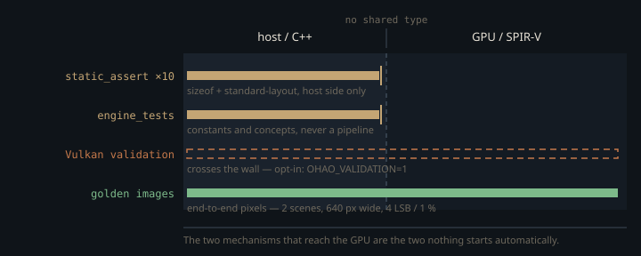

Monograph · Tree · ← Module hub · Cross-module invariants
architecture
Cross-module invariants
Contracts that break pixels silently if violated.
What a violation actually looks like
Nothing here segfaults when two modules disagree. The index buffer still has entries at the offset you computed, the material row still parses as three `vec4`s, the descriptor set still binds, the frame still presents. You get a picture — the wrong one, off by an amount that reads as a lighting decision. The module chapters explain each mechanism in isolation; the question none of them can answer is the cross-cutting one: *what would have caught this?*
Four things in the repository could, in principle. This page audits their reach.
The compile-time tier stops at the language boundary
`OHAO_ASSERT_GPU_LAYOUT(Type, Bytes)` is the engine's one *named* structural contract primitive. It pairs a `GpuPod` requirement — trivially copyable **and** standard layout, so that `memcpy` into mapped device memory is defined and the first member is guaranteed to sit at offset 0 — with a `sizeof` check against a canonical constant.
#Type " must be trivially copyable standard-layout for GPU"); \ohao/core/concepts.hpp:86Five call sites carry the macro, covering `ObjectPushConstants` (240 bytes), `LightData` (128), `PTPushConstants` (256), `GPULight` (80) and `MeshBufferInfo` (16). The same contract is asserted five more times without it: each of the four push-constant structs of `NrdCinematicPost`, which compiles only with NRD enabled, gets a bare `static_assert` on its byte size,
static_assert(sizeof(CompositePC) == 176, "CompositePC must be 176B");ohao/render/rt/denoise/nrd_cinematic.cpp:84and `PBRMaterialParams` gets a `% 16 == 0` alignment assert beside its `GpuPod` check. Ten host-side size or alignment assertions, then — and all ten are assertions about C++ types, evaluated by the C++ compiler. No build step reflects the compiled SPIR-V. Set against the surface they guard — the path tracer alone declares a thirty-six-entry descriptor set layout, and the buffers behind those entries are re-declared independently in the raygen, closest-hit, any-hit and miss stages —
VkDescriptorSetLayoutBinding bindings[36] = {};ohao/render/rt/path_tracer_descriptors.cpp:21ten host-side checks are still a thin instrument. They catch *someone added a float to the struct*. They are blind to *someone reordered the GLSL block*, and blind by construction rather than by omission.
`engine_tests` sits in the same tier and inherits the same ceiling: its GPU-layout case is a handful of `static_assert`s and constant comparisons over `layout_meta.hpp`, checking hand-computed answers and never touching a pipeline.
The tier that does cross the wall is off by default
The Vulkan validation layers are the only mechanism in the stack that reads both sides: they compare the pipeline layout against the SPIR-V interface, check descriptor types and counts, and enforce the structural rules of descriptor indexing. Instance creation requests `VK_LAYER_KHRONOS_validation` only when an environment variable is set.
// Validation layers — enable with OHAO_VALIDATION=1 env varohao/gpu/vulkan/device_setup.cpp:26So the default for every example binary, every golden render and every session in the interactive viewer is a run with no cross-language checking at all. Turn it on and the backlog arrives at once: a single `OHAO_VALIDATION=1 ./build/cornell_box out.png 1` here emits 74 validation errors across 14 distinct VUIDs — image layouts incompatible with the usage flags they were created with, `vkCmdPipelineBarrier2` calls on a device that never enabled `synchronization2`, a descriptor set rewritten while a command buffer holding it is still pending, buffers outliving `vkDestroyDevice`.
Two of those 14 are the failure class this page is about, and only the validation layer names either. The path tracer's layout still flags binding 12 as the variable-count binding while bindings up to 35 are declared behind it, which Vulkan does not permit. And the cascade shadow pass creates a pipeline whose geometry stage reads a uniform block at set 0, binding 0,
layout(set = 0, binding = 0) uniform CascadeMatrices {shaders/shadow/shadow_csm.geom:14that the pipeline layout never declares: `csm_pass.cpp` fills in a push-constant range and leaves `setLayoutCount` at its zero-initialised default, so the pass owns no descriptor set at all and never binds one.
pipelineLayoutInfo.pushConstantRangeCount = 1;ohao/render/deferred/csm_pass.cpp:435`vkCreateGraphicsPipelines` reports it as `VUID-VkGraphicsPipelineCreateInfo-layout-07988` — SPIR-V uses a descriptor the host side does not know about, which is exactly the C++/GLSL disagreement no compile-time assert can reach. Both errors have survived precisely because nothing launches with validation on.
The pixel tier is real, coarse, and currently red
The golden corpus renders two scenes with the denoiser disabled, so what is pinned is raw deterministic beauty rather than a filter's output:
"command": "./build/cornell_box {out} 16 --denoise=none",tests/golden/manifest.json:6and compares them after downscaling to 640 px wide,
DOWNSCALE_WIDTH = 640 # compare at reduced res: averages the FP ghost away + tiny goldenstests/golden/render_golden.py:35against two thresholds that must **both** hold: a per-channel maximum of 4 LSB and an allowance of 1 % differing pixels.
return s is not None and s["max_abs"] <= max_abs_diff and s["diff_frac"] <= max_diff_fractests/golden/render_golden.py:73The conjunction is stricter than the 1 % headline suggests. `max_abs` is a single maximum over the whole frame, so a change that moves one compare-resolution channel by 5 LSB fails regardless of how little area it touches. Sparseness alone saves nothing; only a change that is simultaneously sub-threshold in magnitude *and* sparse gets through.
Where the tier is genuinely coarse is resolution and coverage. The 1920→640 reduction is a bilinear resample, so a difference confined to a handful of full-resolution pixels is averaged against its neighbours before the maximum is taken. And the corpus is two scenes, both offline path traces into a closed box — nothing in it renders the deferred pipeline, a denoiser, or an HDR environment. The manifest's own comment concedes the shape of that problem, asking that every fixed bug add a scene so it cannot silently regress.
The 4-LSB tolerance is justified in the harness as absorbing a floating-point floor from non-associative GPU reduction order,
DEFAULT_MAX_ABS_DIFF = 4 # per-channel LSB at compare-res; absorbs the FP floor with margintests/golden/render_golden.py:33which is the standard argument, and the floor the docstring quotes is stated for a 1920×1080 frame — before the downscale. At the resolution the harness actually compares at, the ghost does not show up here: `--selftest`, which renders each scene twice and diffs the two renders against each other, reports `max_abs=0 diff_px=0` on both. Two consecutive renders are bit-identical at 640 px.
Which makes the state of the corpus unambiguous: it is red. One run here fails both scenes, and not marginally — `cornell_box` at `max_abs=32` against a limit of 4 with 65 % of compare-resolution pixels differing, `metal_rough_spheres` at `max_abs=158` with 93 % differing. The selftest rules out nondeterminism, so this is real drift. The goldens were last regenerated when the C++20 RT refactor landed; the engine has moved since, and no automation re-ran the check.
And nothing starts any of them
The repository carries one CI workflow and it publishes this site. There is no build job, no `ctest` invocation, no golden run, no installed git hook. `engine_tests` and `render_golden.py` both still work — the second one just told us something true — and both run only when a person types the command.
The audit closes on an honest total, one line per mechanism. The asserts are the only tier that fires by itself, on every compile, and they stop at the language boundary. `engine_tests` inherits that same ceiling *and* has to be launched. The validation layers are the only thing in the stack that reads both sides, and they are off unless an environment variable is set. The golden corpus is the only tier that judges a finished image, and it is coarse, manual, and failing.

What the unguarded contracts have in common
Two shapes account for nearly all of them.
**Positional joins.** No array on the ray-tracing path carries a key. Each TLAS instance's custom index is a running triangle count accumulated by one traversal of the scene's `unordered_map`,
globalTriOffset += it2->second.indexCount / 3;ohao/gpu/vulkan/rt_build.cpp:900and the hit shaders recover a global triangle id by adding `gl_PrimitiveID` to it, then use that single number to index the shared index buffer and the per-triangle material table.
uint globalTriID = gl_InstanceCustomIndexEXT + gl_PrimitiveID;shaders/rt/pt_closesthit.rchit:48The join is correct only because several independent walks over that same map admit the same actors in the same order. Nothing downstream can detect a mismatch — there is no id to compare against.
**Hand-copied constants.** The frame-ring depth is named once,
constexpr uint32_t MAX_FRAMES_IN_FLIGHT = 3;ohao/render/frame/frame_resources.hpp:19and then re-typed as a bare `+ 3` wherever a caller drives the render loop itself, because the pixel buffer it reads back is the frame submitted three renders ago:
for (int s = 0; s < spp + 3; s++)examples/turntable.cpp:221Four offline examples spell it that way, and so does the inverse-rendering session inside the engine library, which is not an example program at all:
const int frames = budget.spp + 3;ohao/inverse/render_session.hpp@223ff7f:58Change the named constant and five call sites quietly render the wrong sample count. The no-texture sentinel shows the same pattern with the polarity reversed: it *has* a canonical name,
static constexpr uint32_t kNoTexture = 0xFFFFFFFFu;ohao/gpu/layout_meta.hpp:39and no callers. Every producer re-types the value instead — `0xFFFFFFFFu` in the RT material upload, `UINT32_MAX` in the raster push-constant fill, the literal again in each shader that tests it. The value is load-bearing in a dozen places and spelled two ways; the named constant is decoration.
Two ordering rules round out the set, and both are repaired in code rather than asserted. A path-tracer profile is created lazily, so a scene upload that ran before the profile existed has to be replayed into the new descriptor set:
// forEachRTRenderer was a no-op then — re-upload so materials, textures,ohao/gpu/vulkan/renderer.cpp:436and the light buffer's 16-byte header is re-`memset` to `0xFF` on every upload, so the environment-map index has to be stamped back in even on the path where the HDR itself is not reloaded:
// allocated light buffer (header is memset to 0xFF each upload).ohao/gpu/vulkan/light_upload.cpp:289Positional arrays are the right call and should not be "fixed". Giving each triangle a key — an actor id or material handle stored beside the index — buys a second SSBO fetch in the closest-hit shader, on the hottest path in the engine, to defend against a class of bug that a human catches the first time they look at the render. The rejected alternative is not free and its benefit is small. What the choice really costs is that the ordering contract now lives in prose instead of in a type; the cheap way to buy it back is a debug-only parallel array of actor ids compared once per upload, not a key column in the hot path.
Every invariant in this engine that spans the C++/GLSL boundary is enforced by a person reading two files. The compile-time asserts stop at the boundary, validation is opt-in, the golden corpus is coarse and currently failing, and no automation starts any of them. Read every cross-module claim on these pages as something to re-verify against the code, not as something the build guarantees.
Contracts
- The geometry walk and the material-ID walk must admit the same actors in the same order. They currently do not use the same predicate: geometry upload requires `isVisible()`, the material-ID walk does not. One hidden mesh shifts every later instance's material lookup, and no mechanism in the audit above can see it.
- `render()` must be called at least `MAX_FRAMES_IN_FLIGHT` times before the pixel buffer holds real content. Four examples and `ohao/inverse/render_session.hpp` encode this as a literal `+ 3`; changing the constant without changing all five silently changes sample counts.
- A lazily created RT profile owns no scene data until `updateSceneBuffers()` is replayed into it. `setScene()` and `updateSceneBuffers()` usually run before any `PathTracer` exists, and `forEachRTRenderer` iterates nothing when no profile is alive, so without the replay the new profile's descriptors are never written at all.
- The light buffer's header is rewritten on every upload, so the env-map index and intensity scale must be re-stamped even when the HDR is not reloaded — otherwise the environment silently disappears on the next scene change.
- Adding a descriptor binding numbered above 12 to the RT layout invalidates the variable-count flag on binding 12. Only the validation layer will tell you, and only if `OHAO_VALIDATION` is set in the environment.
Source files
ohao/core/concepts.hppohao/render/rt/denoise/nrd_cinematic.cppohao/render/rt/path_tracer_descriptors.cppohao/gpu/vulkan/device_setup.cppshaders/shadow/shadow_csm.geomohao/render/deferred/csm_pass.cpptests/golden/manifest.jsontests/golden/render_golden.pyohao/gpu/vulkan/rt_build.cppshaders/rt/pt_closesthit.rchitohao/render/frame/frame_resources.hppexamples/turntable.cppohao/inverse/render_session.hpp@223ff7fpath noteohao/gpu/layout_meta.hppohao/gpu/vulkan/renderer.cppohao/gpu/vulkan/light_upload.cppParent hub for the full pipeline narrative; this page is the file-level design unit. Sitemap · hover glossary terms anywhere.